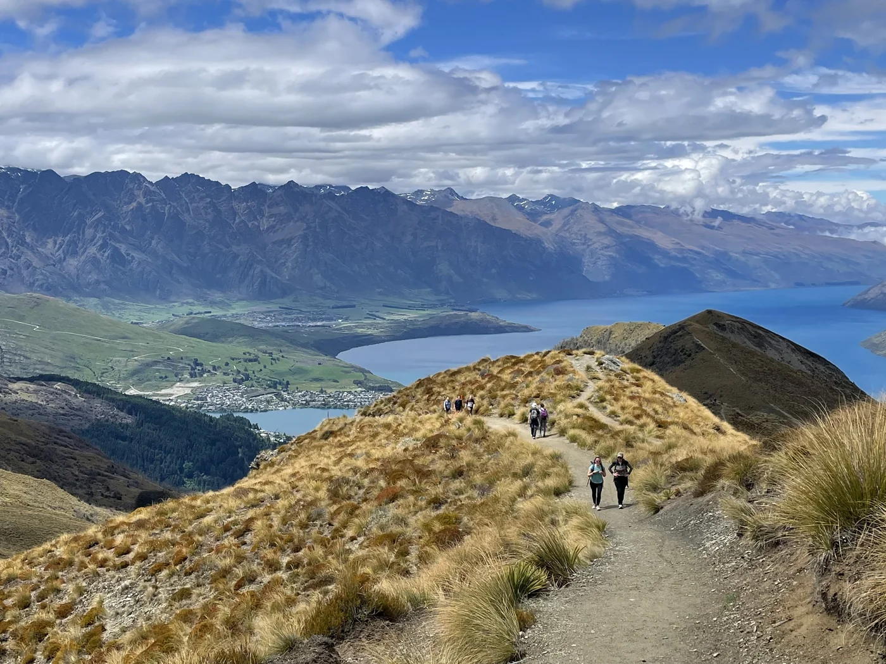
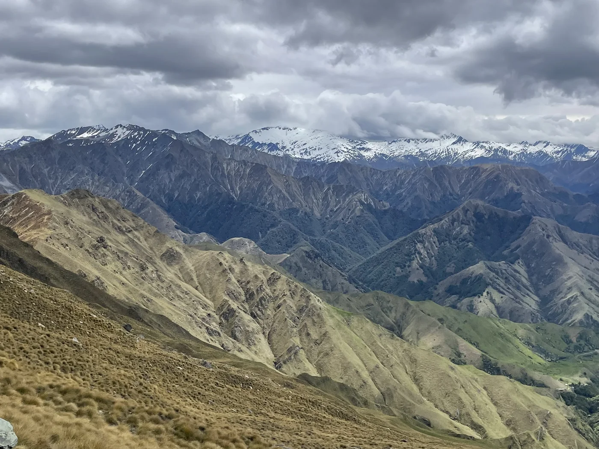
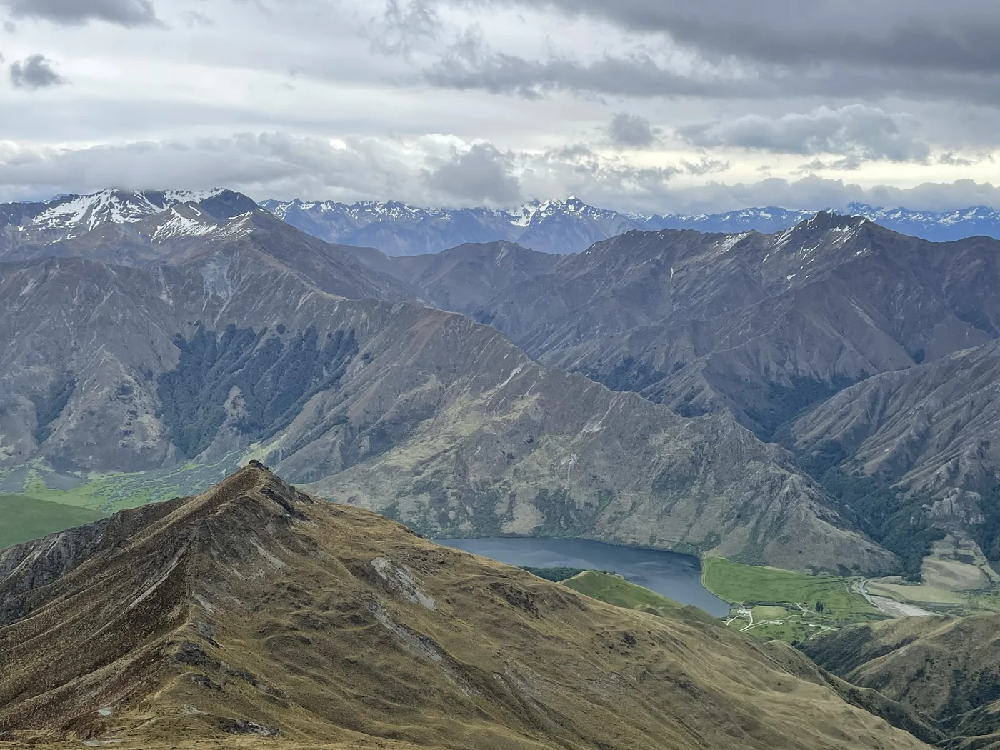
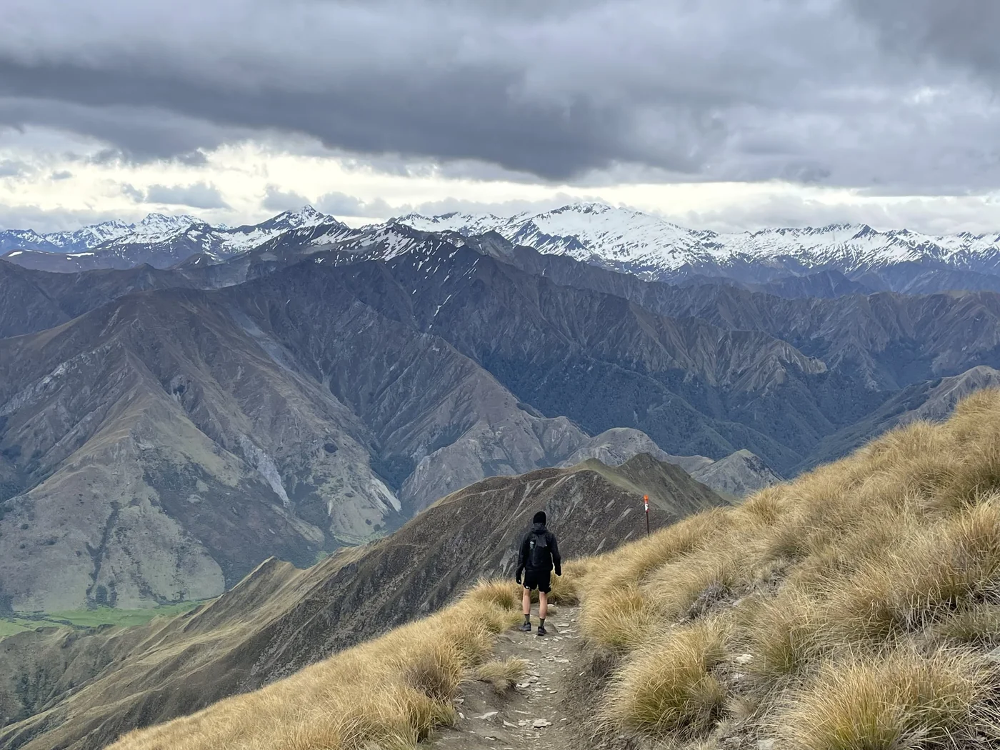

Ben Lomond Summit Track, Queenstown

Quick Facts
Distance14 km return
Duration6–8 hours
Cost$0 (free track)
Best seasonNov – Apr
Overview
This is the best day hike straight out of Queenstown. Big views, steep climbing, and no transport needed if you start from town. I did it as a long day hike and it felt like a proper alpine effort without needing overnight gear.
It's a steady grind up through forest, then exposed ridgeline walking to the summit. On a clear day, you get full views over Lake Wakatipu and the surrounding ranges. I spent around NZD 60–80 for the day including food and a post-hike meal.
Stats and Route
- Route: Queenstown → Tiki Trail → Skyline → Ben Lomond Saddle → Summit → return
- Distance: 14 km return
- Elevation: +1,450 m / −1,450 m
- Time: 6–8 hours
Alternative: Take the Skyline Gondola up to cut around 400 m of elevation off the climb.

Trip Notes / Report
- Most people go up via the Tiki Trail — steep but shaded, good warm-up.
- The hardest section is the saddle to summit — very steep, loose gravel, fully exposed.
- The best section is the ridgeline — wide open views the whole way.
- Weather changes fast — the summit can be windy even when town is calm.
- Track is well-marked, but snow and ice in the shoulder seasons make it risky.
- No water sources after Skyline — carry everything from the start.
- Lots of kea (alpine parrots) near the saddle — they will go through your bag.
Need to Know
- No permit or booking required — completely free.
- Check the weather before going — avoid high wind or low visibility.
- Start early — afternoon clouds often roll in and block the views.
- No toilets after the Skyline complex.
- Sunscreen is essential — long exposed sections at altitude.
- The track can be dangerous in winter without alpine gear.

Getting There
- Walk from Queenstown CBD to the Tiki Trail trailhead — free, 10–15 minutes.
- Skyline Gondola (optional shortcut) — around NZD 50 return, 5–10 minutes up.
Getting Around
- Everything is walkable from Queenstown CBD.
- No transport needed for the hike itself.
Where to Stay
- Hostels in Queenstown CBD — NZD 35–60/night, dorm beds, walking distance to the trailhead.
- Budget motels — NZD 100–160/night, private rooms, kitchenette common.
- Holiday parks (if driving) — NZD 25–40/night for a powered site, slightly out of town.

Eat and Drink
- Grab takeaway before the hike from a bakery or supermarket — NZD 10–15.
- Carry snacks — there is no food on the trail.
- Post-hike burger or pub meal in town — NZD 20–30.
- Supermarket meal prep keeps daily costs low.
Costs
| Item | NZD |
|---|---|
| Food (groceries + takeaway) | $25 |
| Coffee | $6 |
| Post-hike meal | $25 |
| Gondola (optional) | $50 |
| Daily total | $56 – $106 |
Advertisement
What to Pack
- 2 L of water minimum — no refill points on the track.
- Windproof jacket — the summit is exposed even on clear days.
- Trail runners or boots — loose gravel near the top.
- Hat and sunscreen — strong alpine sun on the long exposed sections.
- Snacks and lunch — long climb with no shops past the gondola complex.
- Phone and offline map — track is clear but a good backup if cloud rolls in.
- Light gloves (shoulder season) — cold wind near the summit.